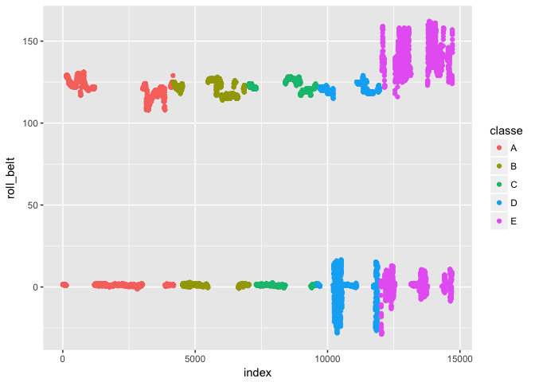
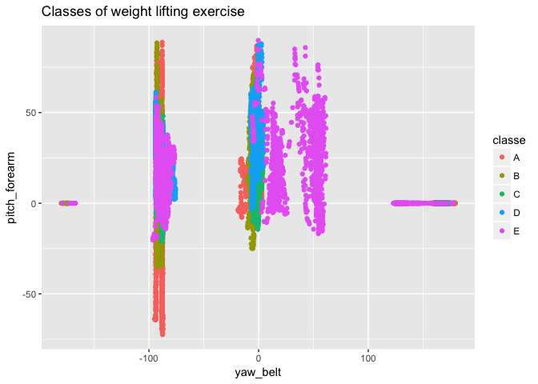
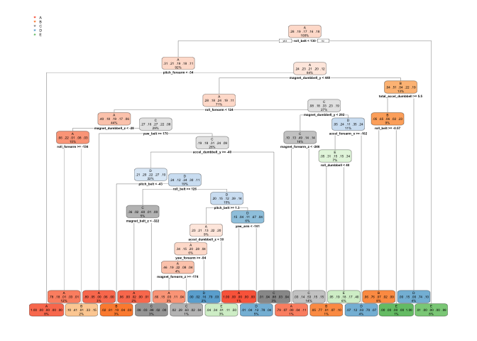
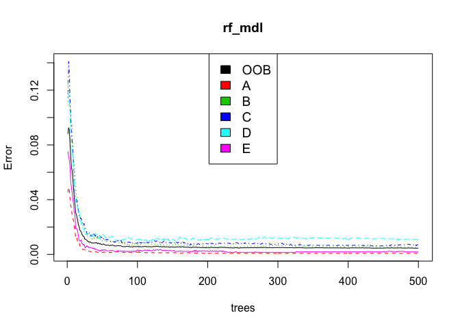
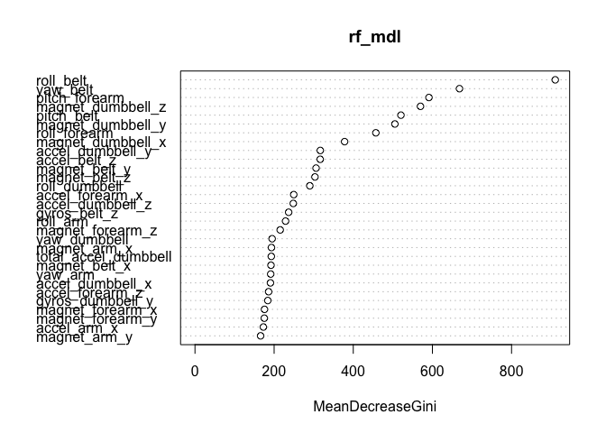

Human Activity Recognition- HAR includes tracking and recognizing from simple human activities like walking, running to more complex activities like cooking,cleaning, etc. in a real life setting. Recognizing and monitoring human activities is very crucial to provide smarter and effective assistance in different fields of life. As an example, say providing health care assistance to elderly people, physically/mentally disable people, or even children.
With the invention of smartphones and wearable devices like Jawbone Up, Nike FuelBand, and Fitbit collecting HAR data is much simpler, effective and inexpensive but the big challenge is how to effective utilize the data, how to find a pattern in the measurement taken from these type of devices to improve the health and fitness of the user. Most of the research on activity recognition mainly focuses on predicting “type of activity” rather than predicting the quality or “how well the activity is performed”. In this project, my goal will be to use data from accelerometers on the belt, forearm, arm, and dumbbell of 6 participants and create a model that can predict whether the barbell lifts is correct or incorrect. This project is inspired by the paper Qualitative Activity Recognition of Weight Lifting Exercises by Velloso, Gellersen,Ugulino,Bulling,Fulks
Participants were asked to perform one set of 10 repetitions of the Unilateral Dumbbell Biceps Curl in five different fashions: exactly according to specification(classe A), throwing the elbows to the front(Classe B), lifting the dumbbell only half(classe C),lowering the dumbbell only halfway(classe D) and throwing the hips to front( Classe E). Classe A is correct way of doing the lifting exercise and rest all are incorrect way of doing it. Age of participant aged between 20-28 years and weight of dumbbell 1.25kg.
The training and testing data set is download from the csv files pml-testing.csv and pml-training.csv into Train_data and Test_data
The Train_data dataset has 19622 observation and 160 variables while the Test_data has 20 observations
The dataset has 160 variables, all the variables may not necessarily influence the prediction values classe. Before working on model development process, lets trim and cleanse the data .
It is a good idea to drop all the variables that does not effect the outcome variable like user_name,timestamps, X (indicates the row number). Column 1 to 7 is removed.
## [1] 19622 153Zero and near-zero variance predictors
Constant and almost constant predictors across samples are called zero and near-zero variance predictors. This kind of predictor is not only non-informative, it can break some models you may want to fit to your data. Lets remove all the zero and near-zero variance using the
library(randomForest)
library(caret)
nzv1 <- nearZeroVar(wl_data)
filter_Wl_data <- wl_data[, -nzv1]
dim(filter_Wl_data)## [1] 19622 94Removing the NAs
The NA or missing values may give errors during the training of models, if it is not handled properly. Lets remove all the columns where more 90% of the data is NA, using the describe() function in psych package
library(psych)
d <- describe(filter_Wl_data)
p <- d[d$n/dim(filter_Wl_data)[1] < 0.1,1]
final_data <- filter_Wl_data[,-p]
dim(final_data)## [1] 19622 53Partitioning the data into two set training test and testing test to train modelas and validate it. 75% of data as training data and remaining 25% as testing data.
library(caret)
set.seed(1117)
dtrain <- createDataPartition(final_data$classe,
p=0.75, list = FALSE)
training <- final_data[dtrain,]
testing <- final_data[-dtrain,]
dim(training); dim(testing)## [1] 14718 53## [1] 4904 53It important here to visualized the data and see if we can see some concrete patterns that distinguise one class from the other classes.
I wanted to see the average roll_belt data for each weight lifting class. So I plotted the roll_belt versus their index.

From the above plot, the only thing that can be infered is that, if the roll_belt measurement is more than 130 or if it is negative value the weight lifting classes is most likely incorrect (classe E or Classe E and D respectively).
Lets plot some more variables, to get some more insight about the data

Definitely, we see patterns when we plot variable yaw_belt versus variable pitch_forearm. Lets explore different classification algorithms to see which are important variables and which is the best model.
In this project, I have tried four different classification models : Decision trees,Linear discriminant analysis,Generalized Boosted Regression Modeling and Random forest. I computed the accuracy for each of these models. The best classification model for this probelm was selected the predicting the Test_Data set.
Lets start with a Decision tree model forcalssification. It is one most common and simplest classification algorithm. I use the rpart() functio to create the decision tree.

## Accuracy
## 0.7373573The accuracy is 0.7373573.
LDA is a Classification algorithm to find a linear combination of features that characterizes or seperates two or more classes of objects or events. It is best to use when classification has more than 2 classes.
## Accuracy
## 0.7037113It fits generalized boosted regression models.
## Accuracy
## 0.4967374Random Forest is an extension of the decision tree algorithm. The core Idea behind Ranodm Forest is to generate multiple small decision trees from random subsets of data.
##
## Call:
## randomForest(formula = classe ~ ., data = training)
## Type of random forest: classification
## Number of trees: 500
## No. of variables tried at each split: 7
##
## OOB estimate of error rate: 0.47%
## Confusion matrix:
## A B C D E class.error
## A 4182 2 0 0 1 0.0007168459
## B 12 2832 4 0 0 0.0056179775
## C 0 14 2548 5 0 0.0074016362
## D 0 0 25 2386 1 0.0107794362
## E 0 0 1 4 2701 0.0018477458Number of trees used in the fores is 500, which is default. The number of predictive variables considered at each split within a tree is 7.
The random forest iteratively uses a different subset of the data to make multiple decision trees. At each iteration, the tree created using the subset is tested with the data that is not used to create the tree. The average of errors of all these interactions is the Out of Bag Error (OOB). For this model OOB error is 0.46%
Lets use the plot() function in random Forest. This plot helps decide how many trees to have in the model. On the y-axis is the error of the model and the x-axis is the number of trees used.

The red, green, blue, aqua, pink curves is for classe A,B,C, D,E respectively while the black curve is the Out-of-Bag error rate. when using between 0 - 20 trees the error remains quite high, but drops and flattens out at around 60 trees. There is no additional drop for any classes after 100 trees, therefore no need to include additional trees to the model.
The variable importance plot gives the importance of each variable when classifying the data. The mean decrease gini is a measure of how each variable contributes to the purity on each node in a tree.

From the plot above, the most important variable as per the random forest model above is roll_belt.
Lets predict the testing data and compute the accuracy.
## Confusion Matrix and Statistics
##
## Reference
## Prediction A B C D E
## A 1395 3 0 0 0
## B 0 944 5 0 0
## C 0 2 849 3 0
## D 0 0 1 800 3
## E 0 0 0 1 898
##
## Overall Statistics
##
## Accuracy : 0.9963
## 95% CI : (0.9942, 0.9978)
## No Information Rate : 0.2845
## P-Value [Acc > NIR] : < 2.2e-16
##
## Kappa : 0.9954
## Mcnemar's Test P-Value : NA
##
## Statistics by Class:
##
## Class: A Class: B Class: C Class: D Class: E
## Sensitivity 1.0000 0.9947 0.9930 0.9950 0.9967
## Specificity 0.9991 0.9987 0.9988 0.9990 0.9998
## Pos Pred Value 0.9979 0.9947 0.9941 0.9950 0.9989
## Neg Pred Value 1.0000 0.9987 0.9985 0.9990 0.9993
## Prevalence 0.2845 0.1935 0.1743 0.1639 0.1837
## Detection Rate 0.2845 0.1925 0.1731 0.1631 0.1831
## Detection Prevalence 0.2851 0.1935 0.1741 0.1639 0.1833
## Balanced Accuracy 0.9996 0.9967 0.9959 0.9970 0.9982The model accuracy is 0.99 , which is more than any other model
As the random forest model gives the best prediction, I will use this model to predict the classification for Test_data.
Predicting the data set
pred_test_data <- predict(rf_mdl, Test_data)
# reading the predicted value in csv file
c <- cbind(Test_data,pred_test_data)
New_Test_data <- c[,-160]
write.csv(New_Test_data, file = "new-pml-test.csv")The predicted outcome for the Test_data set using the RandomForest Model is B, A, B, A, A, E, D, B, A, A, B, C, B, A, E, E, A, B, B, B